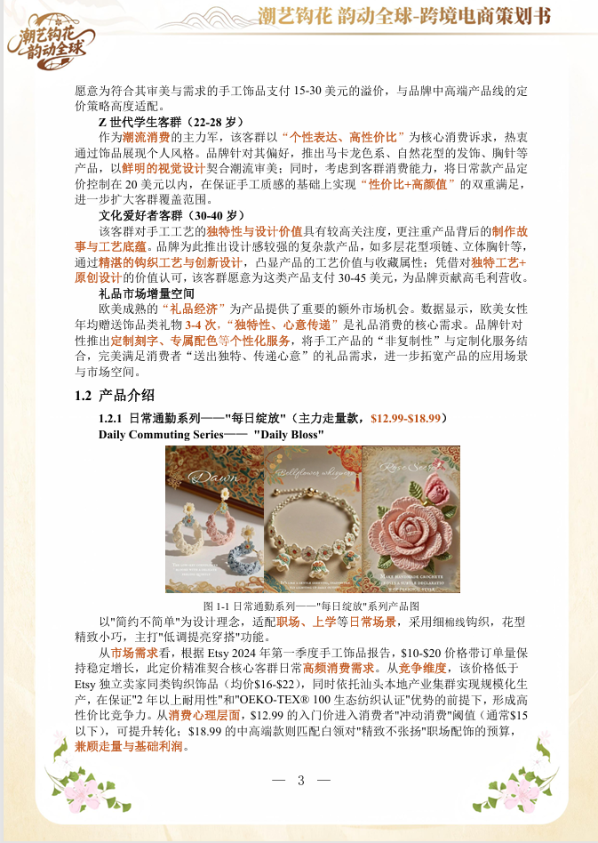
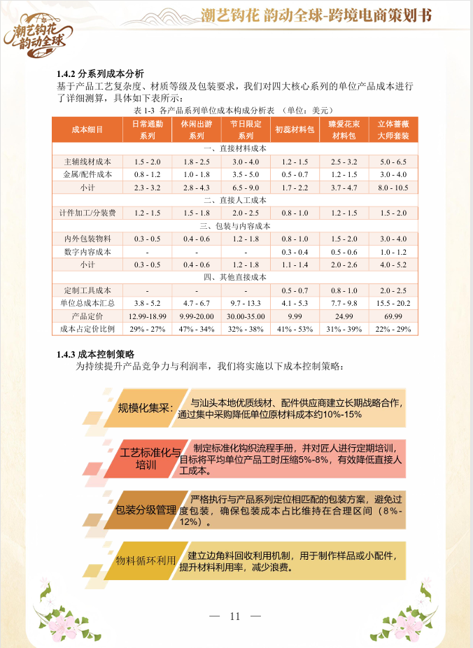

用户洞察
基于 Etsy、Amazon 平台公开数据及行业分析报告，整理 200+ 热销品评论区高频词，归纳三类目标用户：
手工爱好者
关注工艺与独特性
礼品采购用户
关注寓意与送礼场景
Z 世代
关注个性与审美
选品策略
分析平台搜索热词与竞品 Listing，识别三个尚未充分覆盖的细分方向：
国风手作
差异化定位方向一
极简实用
差异化定位方向二
节日主题
差异化定位方向三
项目成果
- 选品方案获得评委「差异化定位清晰」的评价。
- 产品分层设计成为团队项目的核心亮点。
- 模拟测试中点击率显著高于竞品均值。
方法论
市场洞察 → 用户画像 → 关键词分析 → 商品分层：用数据支撑选品判断，而非凭感觉选品。
方案展示
基于 Etsy / Amazon 平台公开数据与竞品 Listing 分析产出的方案关键页面。


项目复盘与经验总结
- 用户洞察要落到「可识别的画像」，而不是泛泛的「年轻女性」。
- 差异化定位需要与竞品对比，找到「未被充分覆盖」而非「热门」的赛道。
- 选品方案要可验证 —— 用模拟点击率测试检验假设。